Desution is an IT consulting startup that provides an array of technological services to clients worldwide.
Our task was to create their entire website from scratch along with an in-built web app that served a specific function.
I lead the backend side of the project, specifically creating the admin side of the web app: a dashboard
Desution admins can log into to add the company's clients and their projects, and update them on their progress.
Aside from frontend languages, I used PHP and mySql along with phpMyAdmin for database creation.
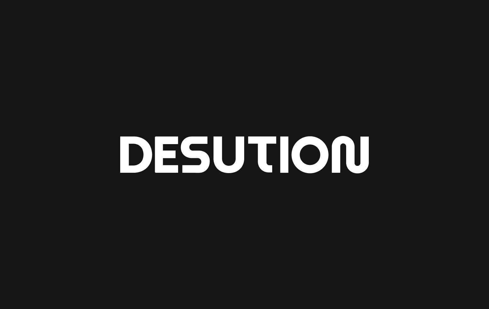
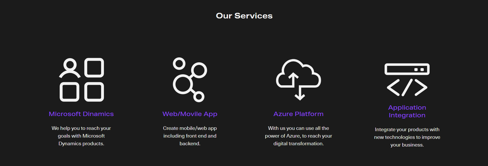
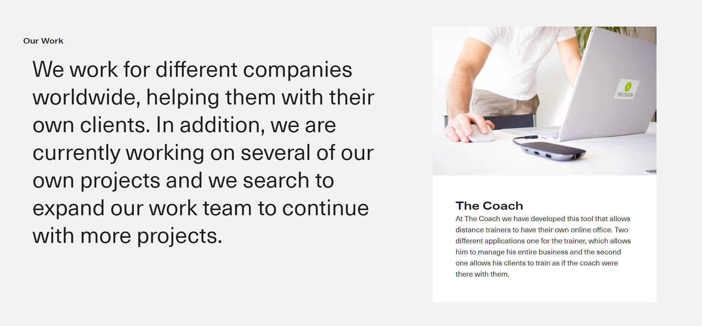
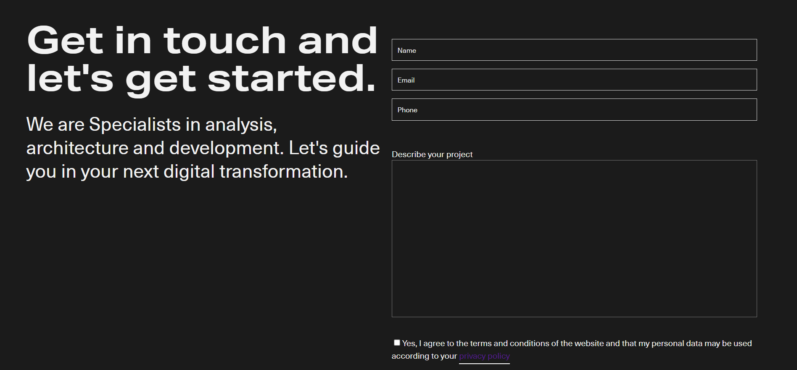
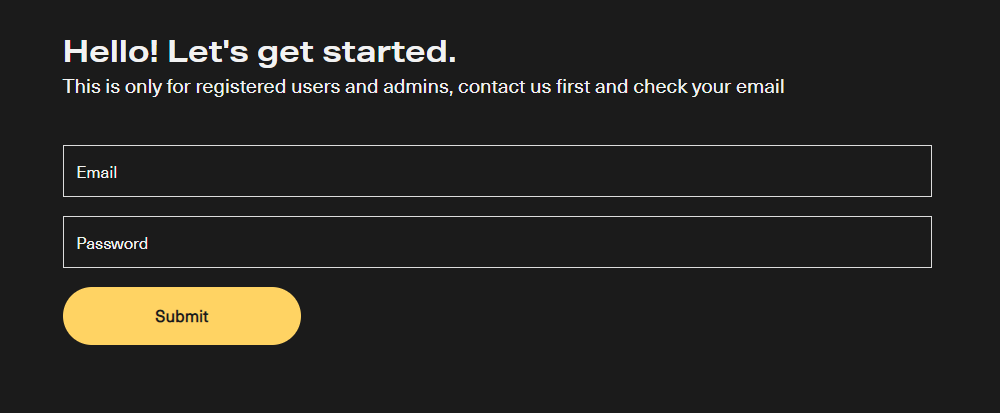
The admin-side of the app is built like a dashboard, where admins can add clients to the databases and
manage their projects, adding new phases and sending different attachments to show the project's progress.
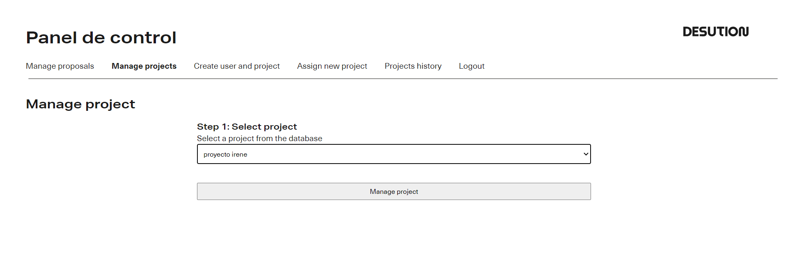
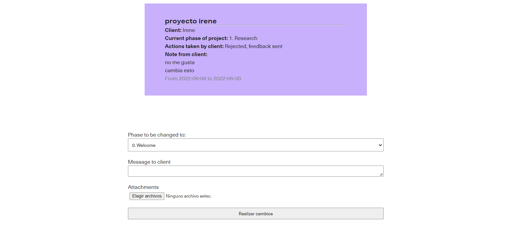
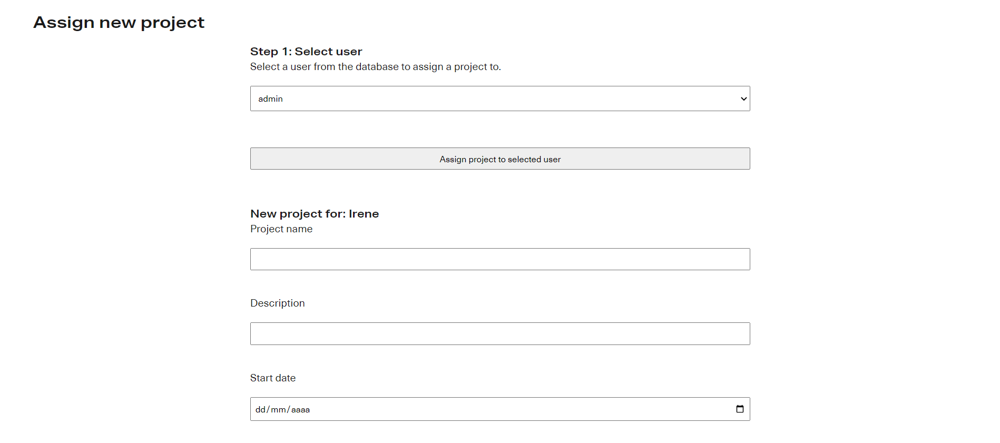
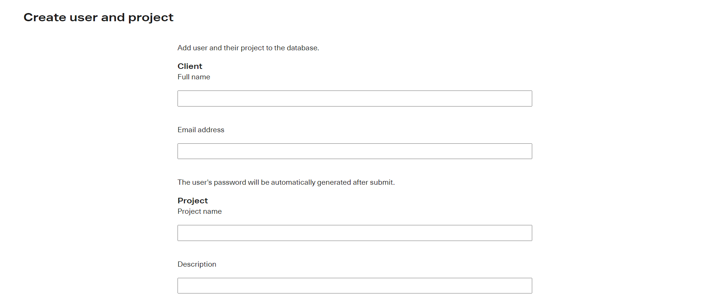
The client side, on the other hand, shows information of their different projects and the ability to either
approve or request a review of the advances sent by the admin.
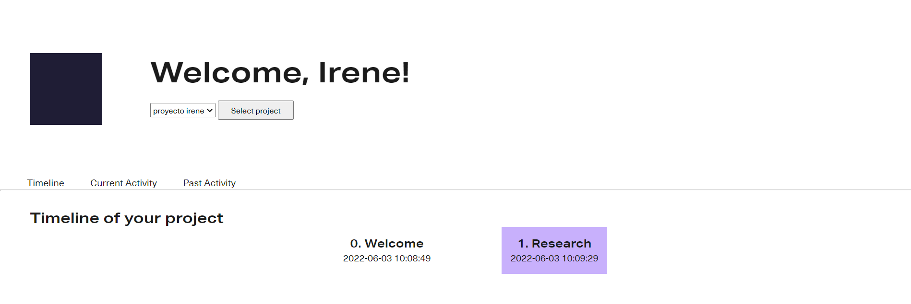
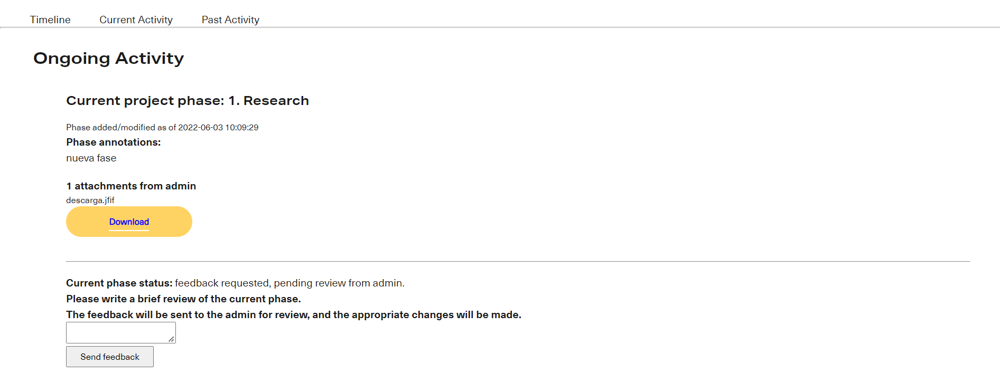